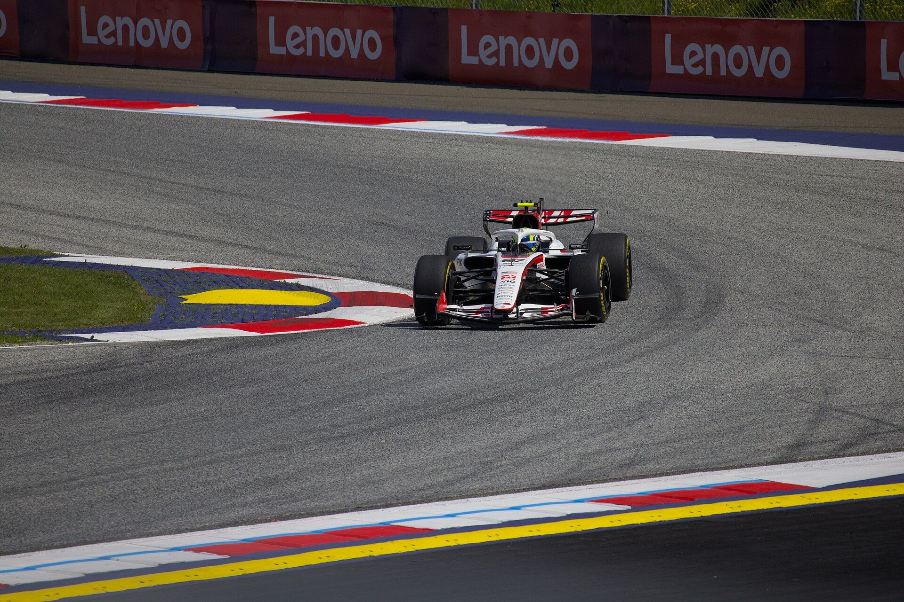
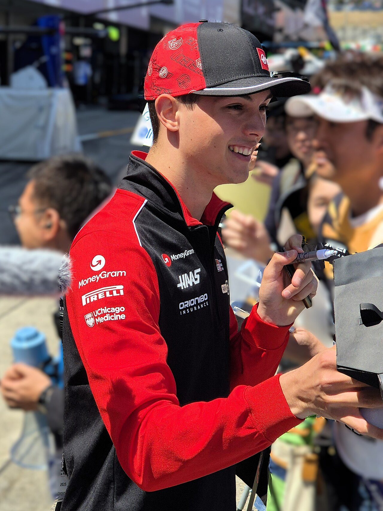
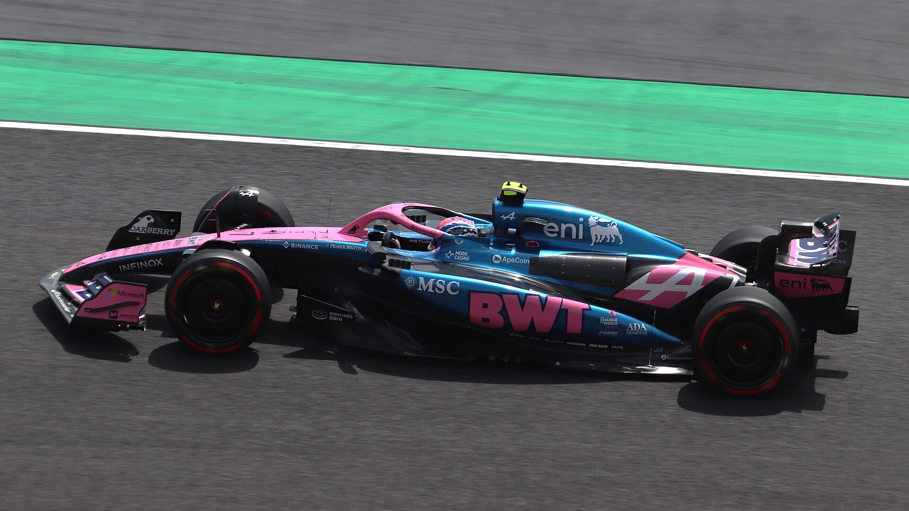

Drivers
Who drives.
Four drivers are part of the 2026 story. Here is each of them, with the numbers that matter.

Photo: Lukas Raich (CC BY-SA 4.0) · Credits
01 · Race driver
OliverBearman
87


Photos: Liauzh (CC BY-SA 4.0), Lukas Raich (CC BY-SA 4.0) · Credits
Fifth in Shanghai. Twenty-three of the team’s thirty-one points.
A Ferrari Driver Academy graduate who scored points on his Formula 1 debut as a last-minute stand-in at Jeddah in 2024, aged 18.
Ollie joined Haas full-time in 2025 and equalled the team’s best ever result with fourth in Mexico City. In 2026 he has carried the scoring: fifth in China, plus points in Australia, Canada, Azerbaijan and two sprints.
Great Britain · Born 8 May 2005, London, England
- 2026 points
- 23
- Championship
- P13
- Best finish
- P5
- Points finishes
- 4 + 2 sprints
- 2023FIA Formula 2 race winner with Prema
- 2024F1 debut for Ferrari in Jeddah, P7. Two substitute starts for Haas
- 2025Full-time Haas race driver. P4 in Mexico City
- 2026P5 in China. The team’s leading scorer
2026 · race finish by round
- 71
- 52
- R3
- 114
- 105
- R6
- 177
- 148
- 129
- 1410
- 1911
- R12
- 1513
- 1614
- 915
- 1416
- 1217
- R18
- R19
- 1720
- 21
- 22
- 23
Points Classified Retired To come
02 · Race driver 2027
RafaelCâmara
51

Photos: KVYTICAL (CC BY-SA 4.0), Lukas Raich (CC BY-SA 4.0) · Credits
Portrait from 2022. Car photo shows his 2026 Formula 2 car.
Confirmed for 2027. Made his debut a season early, at home.
The 2025 FIA Formula 3 champion and Ferrari Driver Academy member is confirmed as a Haas race driver for 2027.
He arrived early: Rafa made his Grand Prix debut at Interlagos in Round 20, in front of his home crowd, and brought the car to the finish.
Brazil · Born 5 May 2005, Recife, Brazil
- F1 debut
- São Paulo 2026
- Debut result
- P20
- 2027
- Race seat
- Title
- FIA F3 2025
- 2025FIA Formula 3 champion
- 2026FIA Formula 2 with Invicta. Confirmed for a 2027 Haas race seat
- Nov 2026Formula 1 debut at the São Paulo Grand Prix
2026 · race results
- P20São PauloRound 20 · 8 Nov
03 · Reserve driver
RyoHirakawa
50


Photos: Morio (CC BY-SA 4.0), Lukas Raich (CC BY-SA 4.0) · Credits
One Grand Prix start. One point.
A two-time World Endurance champion and Le Mans 24 Hours winner with Toyota Gazoo Racing, and the human link in the TGR partnership.
Called up for Mexico City in Round 19, Ryo finished tenth and scored on his Grand Prix debut.
Japan · Born 7 March 1994, Kure, Japan
- GP starts
- 1
- Points
- 1
- Mexico City 2026
- P10
- Le Mans
- Winner 2022
- 2022Le Mans 24 Hours winner and WEC champion
- 2023Second WEC drivers’ title
- 2025Joins Haas as reserve driver
- 2026Grand Prix debut in Mexico City, P10
2026 · race results
- P10Mexico CityRound 19 · 1 Nov
04 · Reserve driver
JackDoohan


Photos: Byxelized (CC0), Liauzh (CC BY-SA 4.0) · Credits
Portrait from 2023. Car photo shows him driving for Alpine in 2025.
Simulator and garage support for the race team.
The Australian joined for 2026 as reserve driver after racing in Formula 1 with Alpine, and supports the race team from the simulator and the garage.
Australia · Born 20 January 2003, Gold Coast, Australia
- Role
- Reserve
- Joined
- 2026
- F1 debut
- Abu Dhabi 2024
- F2
- 3rd · 2023
- 2023Third in FIA Formula 2
- 2024Formula 1 debut in Abu Dhabi
- 2026Joins Haas as reserve driver
Head to head
Bearman v Ocon.
Eighteen rounds in the same car. Bearman finished ahead more often and scored three times the points.
Race results only, except points, which include Bearman’s two sprint scores. For average finish and retirements, lower is better.
Line-up note
Esteban Ocon raced for the team in Rounds 1–18 and scored 7 points. The team confirmed he will not return to a race seat this season. Teams may use four race drivers in a season and Haas has used four, so the seat alongside Oliver Bearman for Las Vegas, Qatar and Abu Dhabi goes to Ryo Hirakawa or Rafael Câmara. It had not been announced at the time of writing.